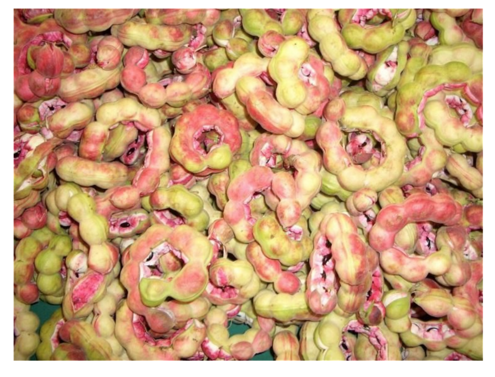

8 Guamúchil
8.1 Pithecellobium dulce (Roxb) Benth

Francisco Olivas-Aguirre1, Gustavo A. González-Aguilar2, Abraham Wall-Medrano 1*
1 Universidad Autónoma de Ciudad Juárez, Anillo envolvente del Pronaf y Estocolmo s/n, Cd.
Juárez, Chihuahua, CP. 32310, México. 2Centro de Investigación en Alimentación y Desarrollo, A.C. Unidad Hermosillo
* Autor para correspondencia: awall@uacj.mx
8.2 Características agronómicas
Según la base de datos etnobotánicos de las plantas mexicanas útiles de la UNAM (BADEPLAM), México es el hogar de más de 25,000 especies de plantas, siendo aprovechadas unas 7,461 y comestibles unas 2,168. Pese a esto, el patrón alimentario del mexicano ha experimentado cambios muy drásticos en los últimos años, reduciendo con esto el consumo de alimentos de origen vegetal, incluyendo a las especies nativas, tanto en el nivel urbano e incluso el rural (Mapes y Basurtom, 2016). Una de estas especies sub-explotadas es el Guamúchil (Pithecellobium dulce), leguminosa arbórea con alta distribución y adaptación ambiental y cuyo fruto posee características nutricionales y fitoquímicas únicas (Wall-Medrano et al. 2016), pero de poca explotación comercial.
8.2.1 Taxonomía
Pithecellobium dulce (Roxb.) Benth pertenece a la familia Leguminosae- Mimosaceae (Cuadro 8.1) a la cual pertenecen también otros organismos tales como las acacias verdaderas, las mimosas o sensitivas, los espinillos y los algarrobos. A la fecha, se han descrito más de 500 especies para el género Pithecellobium, entre domesticadas y silvestres.
| Reino | Plantae | Orden | Fabales |
| Subreino | Tracheobionta | Familia | Fabaceae (Leguminosas) |
| División | Magnoliophyta | Subfamilia | Mimosoideae |
| Clase | Magnoliopsida | Tribu | Ingae |
| Subclase | Rosidae | Género | Pithecellobium |
Esta planta fue inicialmente introducida desde las Filipinas a la India y posteriormente al resto del mundo y fue inicialmente descrita en 1795 (Parrotta, 1991). Actualmente se distribuye en diversas regiones tropicales y subtropicales de la India, el sudeste de Asia y América Latina, donde se conoce como tamarindo de Manilla, espina de Madras, tamarindo dulce, Makamted, Konapuli, Opiuma, Monkeypod, babla Khoya, follaje Jilapi, Jungli jalebi, Kamachile, Guásima o Guamá americano (Wall-Medrano et al., 2014); en México se distribuye tanto del lado del Golfo (Tamaulipas, San Luis Potosí, Hidalgo, Querétaro, Veracruz, y Yucatán) como del Pacífico (Baja California, Sonora y hasta Chiapas, incluyendo Cuenca del Balsas) como se muestra en la Figura 8.1, en donde se le conoce como Pinzan, Guamúchil, huamúchil, guamoche, guamara, guamúche, guamuti, entre muchos otros nombres étnicos (CONABIO, 2018).
Figura 8.1: Distribución geográfica del guamúchil
Su árbol es perennifolio de 15 a 20 m de altura (Figura 8.2) con copa piramidal o alargada, ancha y extendida (diámetro de 30 m); sus hojas están aglomeradas en espiral, bipinnadas, de 2 a 7 cm de largo, con un par de folíolos primarios y cuatro folíolos secundarios sésiles, de color verde pálido mate mientras que su vaina se abre de forma espontánea para dispersar su contenido (dehiscencia) una vez maduro.
Figura 8.2: Pithecellobium dulce (Roxb.) Benth
Cabe señalar que el género Pithecellobium difiere consistentemente de las demás especies de la tribu Ingeae por presentar el funículo modificado en un arilo esponjoso que cubre un tercio o la mitad de la semilla (Tapia-Pastrana y Gómez-Acevedo, 2005). Una vaina mide cerca de 20 cm de largo por 2 de ancho y madura en dos o tres meses después de haberse producido la floración. Una vaina contiene de 5 a 12 semillas, reniformes y de color negro brillante, envueltas por una fruta comestible esponjosa y semi-seca llamada arilo, cuyo color varía no solo entre las distintas variedades de guamúchil (Pío-León et al. 2013) sino también tras la exposición diferencial de cada arilo a condiciones ambientales de luz y oxigenación, variando desde tonalidades blancas a rojas (Wall-Medrano et al. 2016) incluso en una misma vaina (Figura 8.3).
Figura 8.3: Maduración del fruto de Guamúchil
8.2.2 Condiciones de cultivo y estacionalidad
Un árbol maduro de guamúchil produce alrededor de 40 kg de vainas (65-75% de fruta, 9-13% de semilla, 17-19% de cáscara) durante una temporada muy corta (abril-junio). Cuando favorecen las condiciones climatológicas, el guamúchil desarrolla frutos “llegados” en vaina, estado en el que aún no está muy apto para ser consumido pero sí para ser cosechado. Los frutos se colectan directamente del árbol utilizando un “gancho guamuchilero” (garrocha hecha de carrizo largo y delgado amarrado a un gancho de ropa) o escalando el árbol y desprendiendo las vainas manualmente (ver Cómo cosechar guamúchil en Anexo 1). Diversas partes de la planta se han usado para producir madera, frutos comestibles, forraje, abono verde, sustancias médicas, sombra, gomas y otros productos (Monroy y Colín, 2004; Figura 8.4). Entre los usos más destacados del guamúchil están la extracción de un mucílago parecida a la goma arábiga, tintes amarillentos y aceites esenciales aromáticos utilizados para jabonería, leña y carbón de alto poder calorífico y taninos (corteza) para la industria de la curtiduría y miel de buena calidad. Su cultivo ayuda a controlar la erosión, a mejorar la filtración de agua a través de su sistema radical extenso, sobre todo en aquellas áreas donde la precipitación es baja; además, es fijador de nitrógeno atmosférico, delimita predios, sirve como rompevientos y mantiene la fertilidad de los suelos (Monroy y Colín, 2004).
Figura 8.4: Usos del guamúchil
Sin embargo, pese a que el árbol de guamúchil es de uso múltiple, su fruto no se le cultiva de forma comercial y solo se vende en algunos mercados regionales (ver Comercialización de guamúchil en Anexo 1). Al ser un cultivo muy tolerante a agentes externos y, además de proporcionar múltiples productos económicos del mismo árbol, contribuye a la sostenibilidad y rendimiento de otras especies cultivables, al reducir los insumos agrícolas y al mantener la estabilidad de los agro-ecosistemas tradicionales como lo son los barbechos, sabanas, huertos frutícolas, selvas y ríos. Sin embargo, tiene tendencia a propagarse en forma de maleza invasora dentro de su hábitat de distribución por lo que en algunos lugares (e.g. Hawai) se le considerada plaga.
Si se poda, el guamúchil tiene la particularidad de volver a brotar en abundancia y soporta bien las temperaturas elevadas y la sequía (precipitación anual promedio entre 500 y 1000 mm), adaptándose a muchos tipos de suelo como los rocosos con piedra caliza, arcillosos, arenosos e incluso salinos (CONABIO 2018) y se le considera una especie secundaria en bosques de pino-encino, sabana y bosques tropicales caducifolios y subcaducifolios. Sin embargo, no soporta bien los fuertes vientos pues sus ramas son quebradizas y hasta puede llegar a ser arrancado de la tierra además de no tolerar las temperaturas muy bajas. Por último, su manejo agronómico implica prácticas agrícolas y medios de producción primitivos y con calendarios complejos, incluyendo obras primarias para el manejo y conservación del agua y suelo, materias primas locales y una alta inversión de fuerza de trabajo. Los requerimientos mínimos para el cultivo de guamúchil se muestran en el Cuadro 8.2.
| Profundidad | Prefiere y crece mejor en suelos profundos, aunque se desarrolla bien en suelos someros, espesor ≥ 30 cm |
| Textura | Franco-arcillosa y arcillo-arenosa |
| pH | De neutro a ligeramente alcalino |
| Materia orgánica | De moderada a rica |
Por último, la propagación del Guamúchil se puede realizar por micro propagación (Goyal et al. 2012) o germinados de semilla (CONABIO 2018) y algunas características de su germinación se detallan en el Anexo 1 (ver Cómo germinar semillas de guamúchil). En el Cuadro 8.3 se esquematiza un calendario típico de producción en invernadero del Guamúchil así como algunas características de siembra:
| Mar | Abr | May | Jun | Jul | Ago | ||||||||||||||||||
|---|---|---|---|---|---|---|---|---|---|---|---|---|---|---|---|---|---|---|---|---|---|---|---|
| Germinación | # | # | # | ||||||||||||||||||||
| Crecimiento inicial | # | # | # | # | |||||||||||||||||||
| Crecimiento rápido | # | # | # | # | |||||||||||||||||||
| Lignificación |
|
|
|
|
|
|
|||||||||||||||||
| Aclimatación para siembra | X | X | X |
| Características | Parámetros mínimos |
|---|---|
| Diámetro del cuello (mm) | ≥ 5 |
| Altura de la planta (cm) | 15-30 |
| Relación raíz/tallo (R/T) | ≥ 0.4 |
| Relación altura/diámetro (H/D) | ≤6 |
| Sistema radicular | ≥ 7 raíces laterales bien conformadas |
| Lignificación | 2/3 de tallo leñoso |
| Salud | Sin daño aparente |
| Tiempo de cosecha (mes) | 3.5 |
| Mantenimiento en malla sombra (#), cubierta plástica (*) y cielo abierto (X). |
8.2.3 Plagas y enfermedades
En términos generales, el guamúchil es muy resistente a agentes fitopatógenos aunque es susceptible a daño por algunos insectos defoliadores y barrenadores, hongos (manchas necróticas) y condiciones ambientales (e.g. por viento). Algunas larvas de lepidópteros suelen causar daño en los troncos y ramas taladrando la corteza del guamúchil y también es un hogar para larvas de las mariposas Melanis pixe y Eurema blanda. En Hawaii los frutos y semillas del guamúchil son susceptibles al ataque de larvas de Subpandesma anysa GM mientras que en puerto rico Umbonia crassicornis es una peste para el árbol. Otras plagas reportadas son por Polydesma umbricola, Cercospora mimosae, Colletrichum dematium, C. pithecellobii Roldan, Phyllosticta ingae-dulcis Died, P. pithecellobii shreemalo, y Phellinus sp. (Parrota et al. 1991).
8.3 Perfil nutricional y fitoquímico
8.3.1 Productos alimenticios
En México, Tailandia y la India se consume el fruto (arilo) del guamúchil ya sea crudo (ver Consumo de guamuchil en Anexo 1), en bebidas tradicionales, salsas o guisos (Wall-Medrano et al. 2016; Pío-León et al. 2013, 2017; Monroy y Colin, 2004). Durante su maduración, el fruto cambia de color (Figura 8.5) y adquiere sabores dulces y ácidos durante su maduración asociados con el contenido de azúcares y el ácido ascórbico quiene junto a los CF justifican el poder antioxidante del fruto, como se habrá de explicar posteriormente.
Figura 8.5: Cambios de color durante la maduración del fruto de guamúchil
Sin embargo, cuando este fruto es consumido en grandes cantidades llega a “cerrar” la garganta. Esto se debe a la presencia de taninos [condensados (TC) e hidrolizables (TH)] quienes provocan sabor muy astringente, áspero y amargo (Guízar y Sánchez, 1991), relacionado con su capacidad para reaccionar con las proteínas de la mucina y células de la cavidad oral.
8.3.2 Valor nutricional
El fruto del guamúchil es una muy buena fuente de vitaminas (ácido ascórbico, tiamina), fibra dietaria y proteínas de buena calidad (Cuadro 8.4).
| Macronutrimentos | Micronutrimentos | ||||||
|---|---|---|---|---|---|---|---|
| Energía (Kcal) | 78.0 | Cenizas (%) | 0.6 | Vit A (mg) | 15 | ||
| Agua (%) | 77.8 | Ca (mg) | 13 | Vit C (mg) | 133 | ||
| Proteína (%) | 3.0 | P (mg) | 42 | Vit B1 (mg) | 0.24 | ||
| Grasa (%) | 4.0 | Fe (mg) | 0.5 | Vit B2 | 0.10 | ||
| Carbohidratos (%) | 1.2 | Na (mg) | 19 | Vit B6 | 0.60 | ||
| Fibra dietaria (%) | 1.2 | K (mg) | 222 |
Cien gramos (86-93 kcal) de arilos pueden cubrir entre 100-320%, 23-44% y 18-32% del requerimiento diario de ácido ascórbico, tiamina y fibra dietaria, respectivamente (Chaparro-Santiago et al. 2015; Kubola et al., 2011; Pío-León et al., 2013) para mexicanos entre 4-50 años de edad (Bourges et al., 2005). El fruto semi seco (15-18% humedad) y molido tiene 12-15% de proteína (Rao et al. 2011) con un alto contenido de lisina (7.8%) y aminoácidos azufrados (2.8%), cuando se le compara con la soya (Glycine max,) o el frijol (Phaseolus vulgaris). Sin embargo, la composición proximal del guamúchil puede diferir en proteína, grasa o vitamina C entre las especies asiáticas y latinoamericanas.
En nuestro grupo de trabajo hemos encontrado que la composición proximal y características fisicoquímicas varían durante la maduración del fruto (Wall-Medrano et al. 2016): Aunque el contenido energético del arilo no cambia durante su maduración (394 ± 1 kcal / 100 g), la proporción de macronutrimentos sí cambia durante la maduración (p ≤ 0.03, Figura 8.6): proteína (-11%), lípidos (-42%), sacarosa (-92%) y cenizas (+16%); lo anterior se explica por un incremento significativo en ciertos minerales tales como calcio, hierro, potasio, sodio y zinc cuando se comparan las formas blancas con las rojas (Pío-León et al. 2013). La mayoría de los cambios ocurren entre las dos primeras etapas de maduración (verde y blanca) justo cuando la vaina se abre y su capacidad fotosintética disminuye, a juzgar por la desaparición del color verde del fruto.
Figura 8.6: Cambios nutrimentales en fruto de guamúchil durante su maduración.
8.3.3 Fitoquímicos funcionales
Diversas partes del guamúchil son fuente de diversos fitoquímicos con actividad nutracéutica-funcional. La corteza de este árbol contiene triterpenos, lupenona y lupeol mientras que sus hojas y flores diversos compuestos fenólicos como afzelín, ramnósido de Kaempferol, quercitrín (Figura 8.7) y sus semillas tienen diversos ácidos grasos como el mirístico, palmítico, esteárico, oleico, linoleico y linolénico, polisacáridos de arabinosa y β-citosterol y β-amirina (Sriniva et al. 2018; Bagchi y Kumar, 2016). El fruto también posee diversos compuestos fenólicos (CF) como los ácidos gálico, cumárico, elágico, ferúlico, mandélico y vainillínico y varios flavonoides como la quercetina, rutina, kaempferol, naringina, daidzeína (Figura 8.7; Pío-León et al. 2013, Megala y Geetha 2010, Kubola et al. 2011).
Cabe señalar que los compuestos fenólicos y otros antioxidantes del fruto del guamúchil, se ven afectados por el proceso de maduración del fruto. Recientemente, hemos reportado que este fruto pierde poco más de 200 mg de ácido ascórbico durante su maduración (-52% del estadio I al VI, Figura 8.5), aún cuando el contenido final (x 100 g) es superior al de las manzanas, ciruelas, mangos, naranjas y lichis de tal suerte que el contenido final de vitamina C (ácido ascórbico + dehidroascórbico) podría ser superior. Caso similar sucede con la biotransformación de las formas poliméricas (taninos condensados e hidrolizables) a monoméricas de los compuestos fenólicos en donde el incremento de antocianinas es muy significativo (Figura 8.8).
Figura 8.7: Compuestos fenólicos identificados en el fruto del guamúchil
Figura 8.8: Cambios en compuestos fenólicos en el fruto de guamúchil durante su maduración
8.4 Beneficios para la salud
Varias partes de la planta de Pithecellobium dulce han sido utilizadas en la herbolaria tradicional para el tratamiento de diversos tipos de afecciones. Su corteza y pulpa son astringentes y hemostáticas por lo que se han utilizado para tratar dolencias de las encías, dolor de muelas y sangrado. Los extractos de corteza también se usan para la diarrea crónica, la disentería, el estreñimiento y la tuberculosis (Kulkarni y Jamakhandi, 2018). El extracto de hojas se emplea como remedio para la indigestión y para prevenir el aborto espontáneo, para dolencias de la vesícula biliar y para tratar heridas. La semilla molida se usa para tratar las úlceras, diabetes mellitus, inflamación, cáncer, tuberculosis, enfermedades venéreas, trastornos biliares, fiebre, resfriado, dolor de garganta, malaria, pigmentación de la piel, acné y granos, manchas oscuras, conjuntivitis, síndrome del intestino irritable, dolor, eccema y lepra.
Sus efectos para la salud involucran diversos mecanismos citoprotectores, antioxidantes, inhibidores de enzimas, hipolipemiantes, antiparasitarios, espermicidas, antidiabéticos, antisépticos, anti-bacteriales y anti convulsivos (Kulkarni y Jamakhandi, 2018; Nagmoti y Juvekar, 2013; Pradeepa et al. 2013; Juárez-Vázquez et al., 2013; Nilakshi et al. 2011). La mayoría, de estas acciones biológicas involucran la capacidad de captura de radicales libres y otros mecanismos antioxidantes (Nagmoti et al., 2012; Katekhaye y Kale, 2012; Megala y Geetha, 2010). En particular, el conocimiento empírico etnobotánico sobre su uso para tratar úlceras gástricas involucra mecanismos antiácidos y citoprotectores, como ha sido demostrado en roedores (Megala y Geetha, 2010, 2012), mientras su capacidad anti necrótica en tejido hepático (Manna et al., 2011), renal (Pal et al., 2012) y cardiaco (Bhavani et al. 2014) en modelos murinos también involucra a su capacidad antioxidante(Nagmoti et al. 2012; Katekhaye y Kale, 2011).
8.5 Conclusiones
Hoy en día, los consumidores preocupados por su nutrición buscan alimentos vegetales orgánicos, no convencionales y étnicos para mejorar su ingesta diaria de nutrientes y fitoquímicos funcionales que promuevan su salud. En este sentido, diversas partes del Guamúchil son buenas fuentes de estos bioactivos para la salud, particularmente si se cosecha en diferentes etapas de maduración. Sin embargo, resulta indispensable el lograr una estandarización en los sistemas de cultivo y recolección de su fruto, además de una más profunda caracterización química y evaluación del potencial funcional de los principios activos presentes.
8.6 Referencias
Bagchi, S., & Kumar, K. J. (2016). Studies on water soluble polysaccharides from Pithecellobium dulce (Roxb.) Benth. seeds. Carbohydrate polymers, 138, 215-221.
Bhavani , R., Shobana, R., Rajeshkumar, S. (2014). Cardio-Protective activity of Pithecellobium dulce flower and fruit pulp aqueous extracts. International Journal of Pharmaceutical Research, 6(3): 82-89
Chaparro-Santiago A, Osuna-Fernández HR, Aguilón-Arenas J, et al. (2015) Nutritional composition of Pithecellobium dulce, Guamuchil aril. Pakistan Journal of Nutrition 14(9):611–613
Goyal, P., Kachhwaha, S., & Kothari, S. L. (2012). Micropropagation of Pithecellobium dulce (Roxb.) Benth—a multipurpose leguminous tree and assessment of genetic fidelity of micropropagated plants using molecular markers. Physiology and Molecular Biology of Plants, 18(2), 169-176.
Juárez-Vázquez, MC, Carranza-Álvarez, C., Alonso-Castro, A. J., González-Alcaraz, V. F., Bravo-Acevedo, E., Chamarro-Tinajero, F. J., & Solano, E. (2013). Ethnobotany of medicinal plants used in Xalpatlahuac, Guerrero, Mexico. Journal of ethnopharmacology, 148(2), 521-527.
Katekhaye SD, Kale MS (2011) Antioxidant and free radical scavenging activity of Pithecellobium dulce (Roxb.) Benth wood bark and leaves. Free Rad Antiox 2(3):47–57
Kubola J, Siriarmornpun S, Meeso N (2011) Phytochemicals, vitamin C and sugar content of Thai wild fruits. Food Chem 126:972– 981
Kulkarni, K. V., & Jamakhandi, V. R. (2018). Medicinal uses of Pithecellobium dulce and its health benefits. Journal of Pharmacognosy and Phytochemistry, 7(2), 700-704.
Manna, P., Bhattacharyya, S., Das, J., Ghosh, J., & Sil, P. C. (2011). Phytomedicinal role of Pithecellobium dulce against CCl4-mediated hepatic oxidative impairments and necrotic cell death. Evidence-Based Complementary and Alternative Medicine, 2011.
Mapes, C., Basurtom F. (2016). Biodiversity and edible plants of Mexico, In Lira. R., Casas, A., Blancas,J. (Eds) Ethnobotany of Mexico. Springer, New York, NY, 2016. p. 83-131.
Megala J, Geetha A (2010) Free radical-scavenging and H+, K+-ATPase activities of Pithecellobium dulce. Food Chem 121:1120–1128
Monroy, R., & Colín, H. (2004). El guamúchil Pithecellobium dulce (Roxb.) Benth, un ejemplo de uso múltiple. Madera y Bosques, 10(1), 35-53.
Nagmoti DM, Khatri DK, Juvekar PR, et al. (2012) Antioxidant activity and free-radical scavenging potential of Pithecellobium dulce Benth seed extracts. Free Rad Antiox 2(2):37–43
Nagmoti, D. M., & Juvekar, A. R. (2013). In vitro inhibitory effects of Pithecellobium dulce (Roxb.) Benth. Seeds on intestinal α-glucosidase and pancreatic α-amylase. Journal of Biochemical Technology, 4(3), 616-621.
Nilakshi V, Gambhir V, Bhaskar VV (2011) HPTLC analysis of vitamin C from Pithecellobium dulce, benth (fabaceae. J Pharm Res 4(4):1197–1198
Parrotta J. (1991). Pithecellobium dulce (Roxb.) Benth. Guamuchil, USDA For. Serv., South. For. Exp. Stn., Inst. Trop. For., New-Orleans, La., U.S.A.,
Pal, P. B., Pal, S., Manna, P., & Sil, P. C. (2012). Traditional extract of Pithecellobium dulce fruits protects mice against CCl4 induced renal oxidative impairments and necrotic cell death. Pathophysiology, 19(2), 101-114
Pío-León, J. F., Díaz-Camacho, S., Montes-Avila, J., López-Angulo, G., & Delgado-Vargas, F. (2013). Nutritional and nutraceutical characteristics of white and red Pithecellobium dulce (Roxb.) Benth fruits. Fruits, 68(5), 397-408.
Pío-León, J. F., Delgado-Vargas, F., León-de la Luz, J. L., & Ortega-Rubio, A. (2017). Prioritizing wild edible plants for potential new crops based on deciduous forest traditional knowledge by a rancher community. Botanical Sciences, 95(1), 47-59.
Pradeepa, S., Subramanian, S., & Kaviyarasan, V. (2013). Biochemical evaluation of antidiabetic properties of Pithecellobium dulce fruits studied in streptozotocin induced experimental diabetic rats. IJHM, 1(4), 21-8.
Rao GN, Nagender A, Satyanarayana A, et al. (2011) Preparation, chemical composition and storage studies of guamuchil (Pithecellobium dulce L.) aril powder. J Food Sci Technol 48(1): 90–95
Srinivas, G. (2018). A review on Pithecellobium dulce: A potential medicinal tree. IJCS, 6(2), 540-544.
Tapia-Pastrana, F., & Gómez-Acevedo, S. L. (2005). El cariotipo de Pithecellobium dulce (mimosoideae-leguminosae). Darwiniana, nueva serie, 43(1-4), 52-56.
Wall-Medrano, A., González-Aguilar, G. A., Loarca-Piña, G. F., López-Díaz, J. A., Villegas-Ochoa, M. A., Tortoledo-Ortiz, O., et al. (2016). Ripening of Pithecellobium dulce (Roxb.) Benth.[Guamuchil] fruit: physicochemical, chemical and antioxidant changes. Plant Foods for Human Nutrition, 71(4), 396-401.
8.7 Anexo 1
| Tema | WEB link |
|---|---|
| Generalidades del Guamúchil | https://www.youtube.com/watch?v=jnuvl0YCR6o |
| https://www.youtube.com/watch?v=PPgJoCprzgA | |
| https://www.youtube.com/watch?v=trqWK3dC_Fc | |
| Cómo germinar semillas de guamúchil | https://www.youtube.com/watch?v=Qw7p-nuBiVQ |
| Cómo cosechar guamúchil | https://www.youtube.com/watch?v=eTQQy8yeC6s |
| Comercialización de guamúchil | https://www.youtube.com/watch?v=14olU3uYuuk |
| https://www.youtube.com/watch?v=EcQFh9Pl94s | |
| Beneficios para la salud del guamúchil | https://www.youtube.com/watch?v=ZWLEoCL82AM |